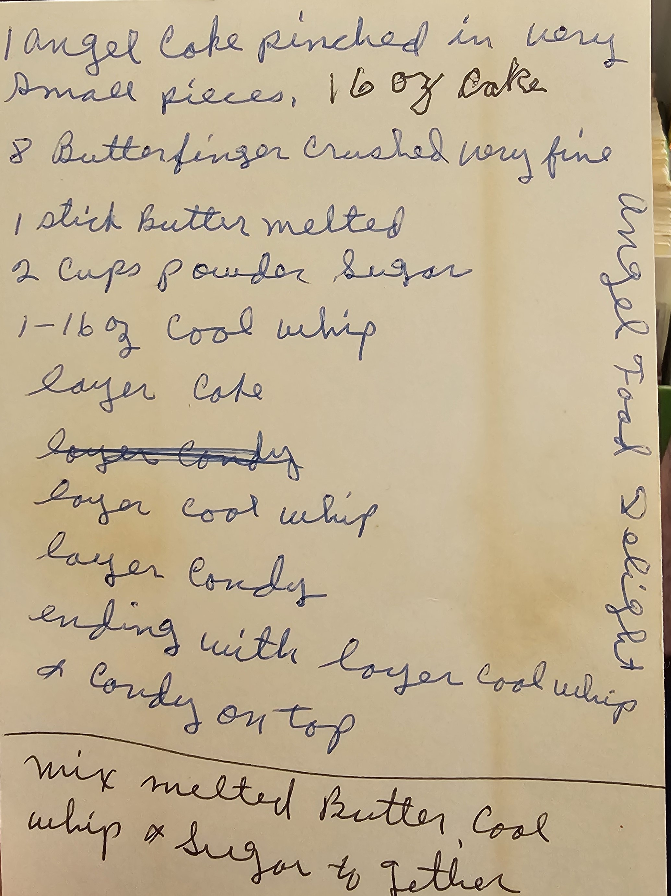

Remembering recipes wasn't easy but this recipe was one of the first to come to mind. It was definitely a staple in our house for a good stretch of the nineties. It was served in a large glass bowl, perhaps a trifle bowl.
I found this recipe in Grandma's recipe box. It was handwritten in her hand writing. Though I can't find the recipe there was also a variation that used Heath Bars instead of Butterfinger. They were both very good.